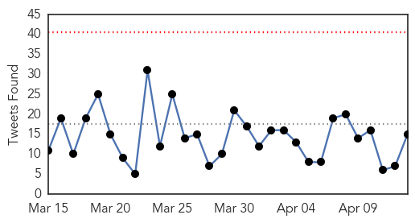
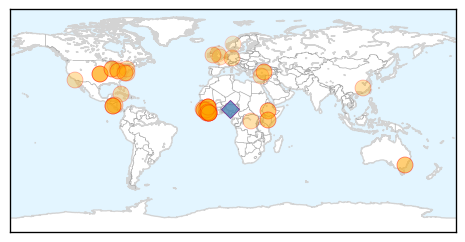
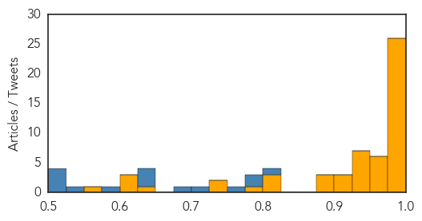
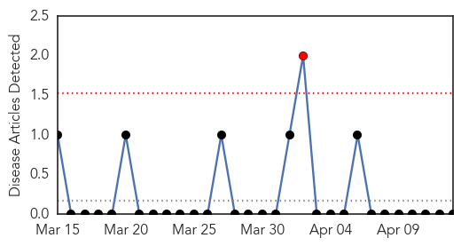
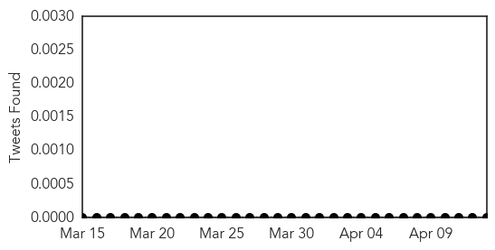

Ebola
30-Day Web Trend
0 alerts, 0 warnings

30-Day Twitter Trend
0 alerts, 0 warnings

Article Locations
Article Confidences
Top Articles:
- 0.999
- Complacency threatens Ebola containment - Sierra Leone
- 0.998
- Nicaragua quarantines US embassy staffer over Ebola fears
- 0.998
- Nicaragua quarantines US embassy man over Ebola and requests removal
- 0.997
- The United States' Ebola Relief Money Could Have Been Better Spent
- 0.996
- Global Health Expert In San Diego To Discuss Lessons From Ebola Outbreak
- 0.996
- End of Ebola near - Mahama
- 0.995
- Physician develops Ebola diagnostic device without having to touch patient
- 0.995
- US, African agreement formalizes creation of African CDC
- 0.994
- Observer
- 0.994
- Physician develops Ebola diagnostic device without having to touch patient
- 0.994
- African Union and U.S. CDC partner to launch African CDC
- 0.992
- 101 Ethiopian Medical personnel in the fight against Ebola in Sierra Leone
- 0.992
- Turkey donates $1mn to AU for combating Ebola
- 0.992
- African Union and U.S. CDC Partner to Launch African CDC - World
- 0.991
- 10-Year-Old Boy Monitored For Ebola Tests Negative For The Disease : T-Lounge : Tech Times
- 0.991
- Pattern of Safety Lapses Where Group Worked to Battle Ebola Outbreak
- 0.991
- Better Ebola Suit
- 0.990
- Residents in Liberia Organize to Fight Ebola through Education
- 0.990
- Welcome to the Expotimes News
- 0.989
- US backs plan for African center for disease control
- 0.988
- U.S. downplays Nicaragua’s concerns about embassy staffer infected with Ebola
- 0.984
- Ebola Diaries Changing Healthcare Worker Culture
- 0.982
- Liberian boy, 10, cleared of feared case of Ebola
- 0.981
- U.S. Agrees to Help Launch 'African CDC'
- 0.980
- African Union and U.S. CDC Partner to Launch African CDC
- 0.976
- African Union and US CDC Partner to Launch African CDC
- 0.969
- Get your HEAL t-shirt today!
- 0.968
- Canberra woman cleared of Ebola after return from west Africa
- 0.968
- Canberra woman cleared of Ebola after return from west Africa
- 0.967
- US, African Union sign deal to form African disease agency
- 0.959
- U.S. Aid To Combat Ebola Arrived Too Late, Mostly Useless
- 0.958
- Nicaragua asks US to remove embassy worker over Ebola worry
- 0.949
- Report: 11 US Ebola treatment centers treated only 28 patients
- 0.949
- Lucas County Health Department: Boy tested for Ebola now diagnosed with malaria
- 0.947
- Turkey donates $1mn to AU for combating Ebola
- 0.942
- As schools and colleges reopen Monday vigilance is necessary
- 0.936
- CDC and African Union Launch African CDC
- 0.934
- Ending the Ebola Outbreak
- 0.928
- Sierra Leone: As nearly 2 million children return to school in ebola-stricken Sierra Leone, psychosocial support will be crucial, says aid agency
- 0.923
- Blood Sample Tests Negative For Ebola At Columbus Area Lab
- 0.905
- How Guinea’s Journalists are Fighting to Win the War Against Ebola
- 0.905
- Empty Ebola Clinics in Liberia cast doubt on the US Relief Effort
- 0.893
- KUNA : US, African Union agree to establish infectious disease ctr
- 0.884
- With UNMEER’s assistance, how Magazine Cut community is fending off Ebola
- 0.880
- ETU Workers Protest over Benefits
- 0.807
- Ebola Left Devastation But Opportunity Too. Don't Stop Sending Money
- 0.803
- Child patient with fever tests negative for Ebola in Toledo
- 0.803
- Child patient with fever tests negative for Ebola in Toledo
- 0.777
- Sierra Leone passenger numbers improve as Ebola crises eases, says Westminster Group
- 0.738
- Sierra Leone passenger numbers improve as Ebola crises eases, says Westminster Group
Showing top 50 articles...
Top Tweets:
- 0.972
- Govt dismisses new outbreak of Ebola - News24 Nigeria http://t.co/tly9zRB8mx ebola EVD
- 0.933
- U.S. downplays Nicaragua's concerns about embassy staffer infected with Ebola - Fusion http://t.co/1rANhKqebR ebola EVD
- 0.930
- Report: 11 US Ebola treatment centers treated only 28 patients - Stars and Stripes http://t.co/yFlldMk1Eu ebola EVD
- 0.860
- DC Doctor to head up Ebola tracking in Guinea - W*USA 9 http://t.co/cGRkl9Mroc ebola EVD
- 0.858
- Pattern of Safety Lapses Where Group Worked to Battle Ebola Outbreak - New York Times http://t.co/oGfboEm2hg ebola EVD
- 0.858
- Pattern of Safety Lapses Where Group Worked to Battle Ebola Outbreak - New York Times http://t.co/gPqBQ6uxYp ebola EVD
- 0.768
- 9 of the 11 Ebola treatment centers built by Americans have never seen a ... - Vox http://t.co/f7tNozfwSK ebola EVD
- 0.758
- 10-year-old boy being tested for Ebola - Toledo Blade http://t.co/LHqSWC8Ve1 ebola EVD
- 0.758
- 10-year-old boy being tested for Ebola - Toledo Blade http://t.co/EGWaVep9hx ebola EVD
- 0.721
- RT: 9 of the 11 Ebola treatment centers built by Americans have never seen a single Ebola patient: ... http://t.co/v7jFbmVORJ Eb…
- 0.665
- Artist Creates Quick Fix That Humanizes Ebola Aid Workers Inside Their ... - Huffington Post http://t.co/Kr8oelFHLN ebola EVD
- 0.621
- Ten lessons from the Ebola epidemic lessonslearned @GulfTimes_QATAR http://t.co/ipXykPFaoC
- 0.620
- Have you seen up-to-date graphics tracking the Ebola outbreak? Take a look here: http://t.co/mQ8lOcZPqk
- 0.602
- 24 new confirmed cases of Ebola last week - see the breakdown in our latest Cross-Border Report http://t.co/fMust8dExh EbolaResponse
- 0.580
- Liberian Pres Sirleaf appoints new health & education ministers to help bring an end to the Ebola outbreak http://t.co/qUikoGyMw3
- 0.573
- Interesting piece on Ebola safety lapses in Sierra Leone. How watertight can an ETU be? lessonslearned http://t.co/3xH6772tJG
- 0.560
- RT: 24 new confirmed cases of Ebola last week - see the breakdown in our latest Cross-Border Report http://t.co/fMust8dExh EbolaRe…
- 0.558
- Tekmira Up on Ebola Candidate Update from the FDA - http://t.co/dHKFn8tP29 http://t.co/tzEtp2HOwn ebola EVD
- 0.555
- Texas research on Ebola vaccine takes big step toward OK - Santa Fe New Mexican http://t.co/HRlhPnxNEW ebola EVD
- 0.530
- Pattern of Safety Lapses Where PartnersinHealth Worked to Battle Ebola Outbreak http://t.co/tkBNIMSphY
- 0.501
- Ebola survivors are urged to obey preventive measures prescribed for their continued health: http://t.co/IJGV5grQKi
Yellow Fever
30-Day Web Trend
1 alerts, 0 warnings

30-Day Twitter Trend
0 alerts, 0 warnings

Article Locations

Article Confidences

Top Articles:
-
No articles found for Apr 13, 2015
Top Tweets:
-
No tweets found for Apr 13, 2015